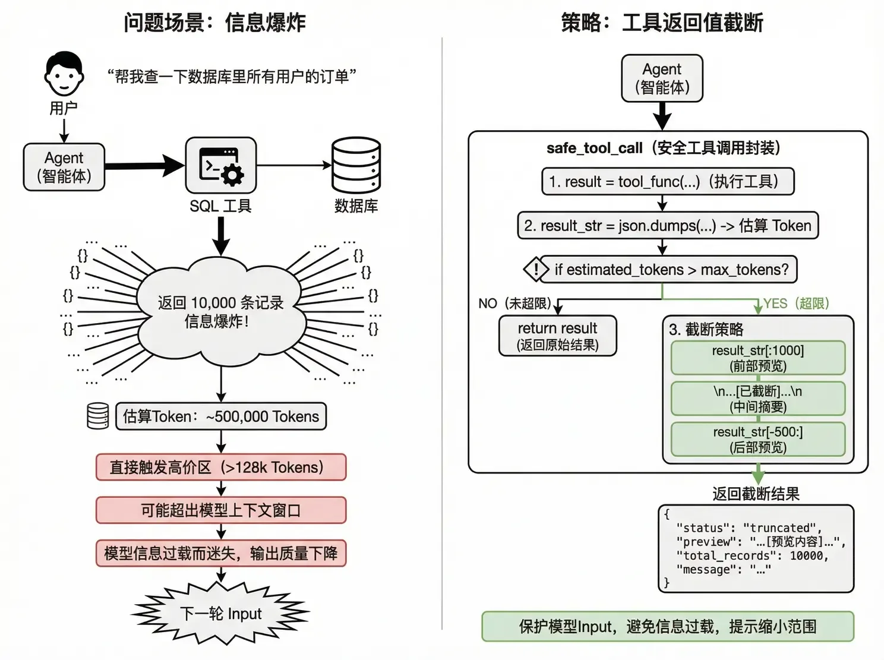

Agent 四大成本陷阱與熔斷
上一節看到的還只是「一次成功的執行」。真實世界裡，Agent 的帳單事故來自四個方向：工具返回爆炸、思考稅、死迴圈、歷史雪球。每一個都有對應的工程解法。
使用者說「幫我查一下資料庫裡所有使用者的訂單」，Agent 調 SQL 工具返回 10,000 條記錄 ≈ 500,000 Token。這 50 萬 Token 會被塞進下一輪 Input：直接觸發高價區、甚至撐爆上下文視窗，模型還會因資訊過載而「迷失」，輸出品質反而下降。解法是給所有工具套一層截斷保護：

Qwen-Plus 思考模式、DeepSeek-R1、o1 這類模型會生成「思考過程」：使用者可能看不到，但全部按 Output 計費，而且單價還翻 4 倍（Qwen-Plus 非思考輸出 2 元/M，思考模式 8 元/M）。同一個 Agent 任務開啟思考模式後：可見輸出不變（450 Token），思考過程 +2,000 Token，輸出費用暴漲 +2,078%。
| 任務型別 | 思考模式 | 理由 |
|---|---|---|
| 簡單檢索 | ❌ 關閉 | 不需要深度推理 |
| 資料清洗 | ❌ 關閉 | 規則明確，不需要「想」 |
| 複雜推理 | ✅ 開啟 | 值得為準確率付費 |
| 程式碼生成 | ⚠️ 視情況 | 簡單函式關閉，複雜架構開啟 |
進階解法：用 0.6B 級的極小模型做前置分診，先花幾釐錢判斷這個請求需不需要深度思考，再決定路由到哪個模式——這就是第 3 節「T2 給 T0 打下手」的具體形態。

Agent 修 Bug：修復 A → 報錯 B → 修復 B → 報錯 A（回到原點）→ …… 15 輪還在轉。每輪 Input 膨脹 1,000 Token 的話，20 輪下來成本漲 13 倍；更糟的是使用者等了 5 分鐘任務還沒完成。解法是強制熔斷，三個條件任一命中就優雅退出：
優雅退出時要帶上 rounds_executed、tokens_consumed 和 partial_result——半成品也比黑洞強。

標準做法（錯誤）是每輪都把完整歷史塞進 Input。優化做法是固定左側 + 壓縮歷史 + 保留最近 N 輪：System Prompt 永不壓縮（保快取前綴），最近 3 輪保留完整細節，更早的歷史用小模型壓成一句摘要。
| 方案 | 第 10 輪 Input | 說明 |
|---|---|---|
| 無限膨脹 | ~50,000 Tokens | 包含全部歷史 |
| 滑動視窗（最近 5 輪） | ~12,000 Tokens | 丟失早期上下文 |
| 固定 + 摘要 + 最近 3 輪 | ~6,000 Tokens | 既保關鍵資訊，又控制長度 |
| 控制點 | 策略 | 預期收益 |
|---|---|---|
| 工具返回值 | 截斷 + 摘要，上限 2k Tokens | 防止單輪爆炸 |
| 歷史管理 | 固定左側 + 壓縮舊歷史 | 降低 50%+ Input |
| 迴圈控制 | 熔斷機制（輪次 / Token / 死迴圈檢測） | 防止無底洞 |
| 思考模式 | 按任務分級開啟 | Output 成本降 4 倍 |
| 模型選擇 | 簡單子任務用小模型 | 降低單價 |
| 快取利用 | 固定 System Prompt，命中 KV Cache | Input 成本降 90% |
| 紅線 | 閾值建議 | 後果 | 應對 |
|---|---|---|---|
| 單輪 Input | < 32k Tokens | 跳入高價區 | 歷史壓縮 + 工具截斷 |
| 總輪次 | < 10 輪 | 成本指數膨脹 | 熔斷機制 |
| I/O Ratio | 監控 > 50:1 | Agent 在「空轉」 | 優化流程或降級任務 |
給工具返回值設 2k 上限：截斷 + 摘要 + 提示縮小範圍，防止單輪 Input 爆炸。
思考模式按任務分級：看不見的內心戲也按 Output 計費，單價還翻 4 倍。
熔斷是 Agent 的保險絲：輪次、Token 預算、死迴圈檢測三選一命中就優雅退出。
歷史管理用「固定 + 摘要 + 最近 3 輪」，比粗暴滑動視窗省一半還不失憶。
內容來源：整理自作者團隊內部分享《AI Token 降本增效策略分享》「Agentic 應用的計費機制」。Agent 卡死與防呆的產品視角在動手實戰篇有專門章節，上下文壓縮另見Harness 核心 · 上下文溢位。